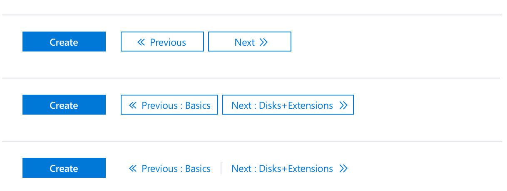

CREATE VIRTUAL MACHINE
Redesign the "create" pattern in Azure to easily onboard user to any service.
Problem
Virtual machine (VM), as one of the basic infrastructure resource in Azure, generates billions of profits. 50% of resources created in Azure is virtual machine and 70k virtual machines get deployed every week.
However, the abandon rate of creating a VM is as high as 58%. And the average time on task of 80th percentile is 6.84 minutes. We got a lot of complaints on the "long journey" of VM create experience.
Problem with current experience:
- Users are taken through a long journey through marketplace before create.
- The wizard requires users to go through all pages step by step.
- The card design for size picking in step 2 is inefficent for users to explore options.
- The blade is too narrow and overloaded with poorly grouped information.
Design Scope
Since this create wizard is used for all "create" scenarios in Azure, and virtual machine is the most complicated yet most important one, we decided to use virtual machine as the starting point to design a new pattern for creating new resources in Azure.
The biggest challenge of this is to make sure the design pattern works for all scenarios, from the most complicated create virtual machine to the simpliest create web app scenario (only 1 step).
Explorations and iterations
User studies are conducted weekly to guide our iteration. We first explored different navigations and then iterated on detailed design patterns like tab style, summary, nested task flow and validation, etc. Below are some major iterations and decision making:
1. Main navigation
We had three design solutions for main navigation:
- One-page create form with collapsable sections - Effecient for power user but high cognitive load especially for new users.
- Wizard with a summary as the last step - More breathing space yet slows users to review and make changes.
- Wizard with summary pane on the right - A hand-hold experience and always able to see what's being changed.
Researchers conducted 5 in-depth studies and found that users all like the third option. However most devs and designers are not convinced due to the small sample. So our researcher ran an unmoderated study with 24 participants that had varying levels of experience with creating VMs.All users perferred the new patterns to the existing create expereince. The third one is most preferred as well as least hated.
2. Tab styles
The numbered steps make users think that they need to go through every step in order. Yet in our virtual machine create experience, we want them to only focus on what they care and finish create as soon as they'd like. So we decided to go with unordered tabs and applied a new style to our old tab pattern.
3. Summary styles
We landed on the grey background because users think the white background with shadow interacts like a context blade, which is an exsiting Azure design pattern like a modal. Also our extension partners like web app team strongly suggests that we give an option to collapse the summary since they have very short create forms that a summary may not be as useful.
4. Previous/Next buttons
Having previous/next as a secondary button next to create makes users think they are required to click next and it's competing attention with the create. So we explored using a link style instead of a button. However a link at the end of the form is easy to be overlooked comparing to links docked in the action ba. Also exposing tab names in the button helps clarify.
5. Nested task
The two inline nested pattern works well for small tasks. As we are asked to only provide one pattern for all extensions, we chose the context pane design as it's more scalable.
6. Size picker
The left one is current size picker, which is complained by lots of users. It's very hard to browse, compare and filter. Also users don't know why we are showing them three recommended sizes. We ran studies on what filters users would like for the new size picker grid and made more clear about why we are recommending the prices.
Final design
The final design pattern we landed on is a stepped wizard with a collapsable summary pane on the right. Depending on the complexity of create, extensions can choose to opt out the summary pane. Other iterations we've done include error validation and adding more grouping and explanation.
 Groupings and explanations
Groupings and explanations
Business impact
This pattern is going to be adopted by Virtual machine and web app create experience soon, and is going to be consumed by 20 more extensions. We got 100 experience and success score in usability studies. Stay tuned for telemetry data once the pattern is shipped.